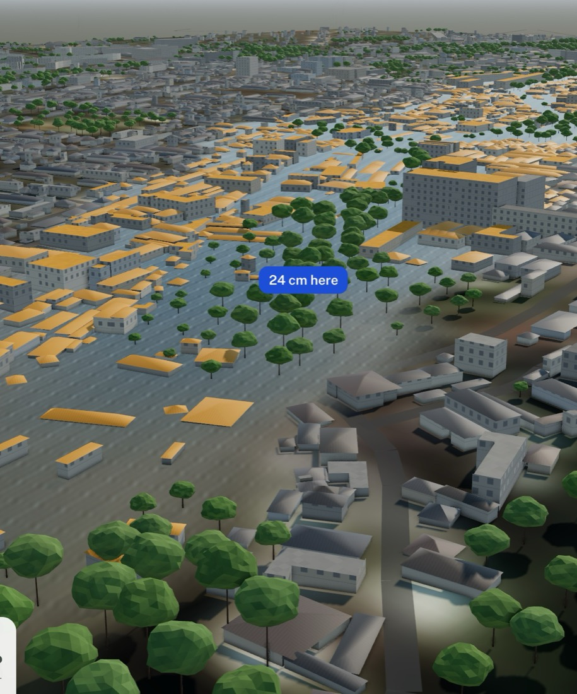

Your street, farm or village, anywhere in Africa. Floods first.
brought heavy rain (30 mm or more) for 23 April. The middle forecast: 11 mm. On the forecast alone, a flood looked unlikely.
More than twice the normal 161 mm for that time of year. In 30 years (1991 to 2020), only one was wetter. The ground was already full.

Rain that looked ordinary fell on soaked ground, and Nairobi flooded.
So Forewarn reads both: the rain that is coming, and the rain already in the ground.
51 runs of the ECMWF forecast, blended for your spot. You get a chance in plain words: "about 1 in 4 forecasts".
How much rain has already fallen against normal for the time of year. Soaked ground floods sooner. On a farm, the same number shows a season running dry.
In Lagos and Nairobi, replay the last flood street by street and see which roads went under.
Code computes every chance, depth and date. The agent (Meta's Muse Spark) explains them and moves the map.
A checker compares every number in an answer with the data before you see it.
A person approves every alert before it goes to anyone.
Flooding looks unlikely in Kibera for the next 14 days. The ground is not soaked: the last 30 days brought 46 mm, close to the normal 37 mm for this time of year.
The riskiest day is Thursday: about 1 in 20 forecasts bring more than 28.4 mm. That is more than the worst day of the March storm, which did not flood your spot.